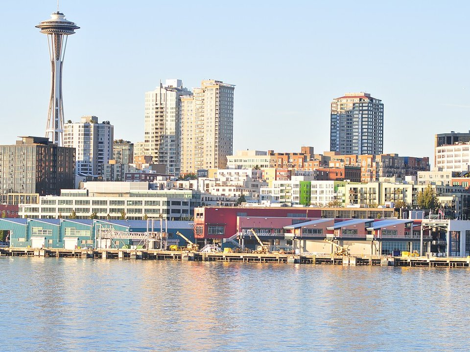

Waterfront · Hotel
The Edgewater
Rooms over Elliott Bay on a pier, home of the Six Seven restaurant.
Official details for The EdgewaterBoeing Field, Pike Place and the Sound.
Seattle is the one big-city weekend where the airport is an attraction: Boeing Field is home to the Museum of Flight, with a Concorde, Air Force One and a Space Shuttle trainer. Land at Boeing Field, spend a morning at the museum, stay on the water at the Edgewater or at Inn at the Market, browse Pike Place Market, ride to the top of the Space Needle, see Chihuly Garden and Glass, cruise Elliott Bay, and book a special dinner at Canlis.

Time illustration: direct distance at 150 KTAS plus 15 minutes for departure and arrival, matching the discovery page. Use ForeFlight for your actual flight plan.
Check the weekend weather at both ends → Flight category, your minimums and the crosswind on the best runway.
KBFI, Boeing Field/King County International, is a towered airport at 22 feet with a 10,007-foot main runway, about 10 minutes from downtown and next to the Museum of Flight.
Boeing Field/King County International Airport, Seattle, WA
Other FBOs: Signature Aviation (206-763-0350) and Skyservice (206-762-6376). Under the Seattle Class B with Boeing test flights and heavy traffic; brief the procedures and noise rules. For transient parking at the Museum of Flight, call museum security ahead (206-920-9770). Bird flocks near the airport. No live fuel price is shown.
Pacific Northwest weather: low ceilings, drizzle and mountain obscuration much of the year from October to May, morning marine stratus in summer, and busy airspace around Seattle. About 2110 nm from Myrtle Beach: two long days each way with several fuel stops. Plan a week, or overnight on the way out and back.
Rates and availability need travel dates. Summer and cruise-ship days book up.
Rooms over Elliott Bay on a pier, home of the Six Seven restaurant.
Official details for The EdgewaterA small hotel in the market with Sound views.
Official details for Inn at the MarketBay views and an infinity pool a block from Pike Place.
Official details for Four Seasons Hotel SeattleA 1927 boutique hotel with the classic Oliver’s Lounge.
Official details for Mayflower Park HotelA wine-themed boutique hotel near Pioneer Square and the ferries.
Official details for Kimpton Hotel VintageAn art-filled boutique hotel near the waterfront.
Official details for The Alexis Royal SonestaHotels across Seattle.
Visit Seattle for More places to stayPrices and availability for your dates, through our partner Stay22. This is an affiliate link: we may earn a commission at no cost to you. The picks above are never paid.
Reserve weekend dinners.
A 1950 landmark with a view over Lake Union.
Official details for CanlisSeasonal Northwest seafood over Elliott Bay at the Edgewater.
Official details for The Six SevenItalian food and a hidden patio at Pike Place.
Official details for The Pink DoorOysters on the waterfront.
Official details for Elliott’s Oyster HouseGet to Pike Place early to beat the crowds.
Views and glass art at Seattle Center.
Chihuly Garden and GlassThis prototype links to the local visitor site. It does not yet match events to your travel dates.
Sunny, mild days.
Visit Seattle for Dry seasonHydroplane races and the Blue Angels.
Visit Seattle for SeafairOpen daily.
Museum of Flight for Museum of FlightCheck the local calendar when choosing a weekend, and confirm dates and tickets with the organizer.
A sample Seattle weekend. This is a two-day flight each way; plan a week. No bookings or availability confirmed.
Land at KBFI mid-morning.
Lunch in town.
A short walk, then back to the airport.
Land at KBFI, subject to weather, density altitude and your actual flight plan.
The Museum of Flight.
Dinner at The Pink Door.
Pike Place Market, early.
The Space Needle and Chihuly Garden.
Dinner at Canlis.
A harbor cruise.
Compute takeoff performance and allow time at the FBO.
Seattle ceilings can drop quickly; leave with a margin.
The main sight.
Explore.
Dinner in town.
This guide is part of a multi-stop flying trip. Set your dates and aircraft, then swap stops to make it your own.
These details make the difference between an appealing list and a usable getaway.
Hotel, Canlis, then museum parking.
About 2,110 nm from Myrtle Beach: two long days each way.
Brief the Seattle Class B.
July to September.
Picks and links reviewed by WingAway Weekends. Hours, prices, menus and availability change often, so confirm directly with each place before booking. Spotted something out of date, or have a favorite we missed? Email us at hello@wingawayweekends.com.
WingAway Weekends helps you discover the destination. Use ForeFlight and current official aviation information for route, performance, weather, NOTAMs and preflight decisions. Flight planning and PIC responsibility stay with the pilot.
One fly-in weekend, a Fly to Lunch pick and the newest guides, about once a month.
Free. Unsubscribe anytime.